대기환경기사 (2017-09-23 기출문제)
1과목: 대기오염 개론
1. 오염물질이 주위로 확산되지 않고 안전하게 후드에 유입되도록 조절한 공기의 속도와 적절한 안전율을 고려한 공기의 유속을 무엇이라 하는가?
- 제어속도(Control Velocity)
- 상대속도(relative Velocity)
- 질량속도(mass Velocity)
- 부피속도(volumetric Velocity)
(정답률: 87%)

2. 대기의 건조단열체감율과 국제적인 약속에 의한 중위도 지방을 기준으로 한 실제체감율인 표준체감율 사이의 관계를 대류권내에서 도식화 한 것으로 옳은 것은? (단, 건조단열체감율은 점선, 표준체감율은 실선, 종축은 고도, 횡축은 온도를 나타낸다.)
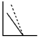
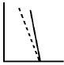
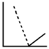
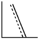
(정답률: 68%)
3. 광화학 스모그현상에 관한 설명으로 가장 거리가 먼 것은?
- LA형 스모그는 광화학 스모그의 대표적인 피해사례이다.
- 광화학반응에 의해 생성된 물질은 미산란 효과에 의해 대기의 파장변화와 가시도의 증가를 초래한다.
- 광화학 옥시던트 물질은 인체의 눈, 코, 점막을 자극하고 폐기능을 약화시킨다.
- 정상상태일 경우 오존의 대기 중 오존농도는 NO2와 NO비, 태양빛의 강도 등에 의해 좌우된다.
(정답률: 74%)
4. 오존층의 O3은 주로 어느 파장의 태양빛을 흡수하여 대류권 지상의 생명체들을 보호하는가?
- 자외선파장 450nm~ 640nm
- 자외선파장 290nm~ 440nm
- 자외선파장 200nm~ 290nm
- 고에너지 자외선파장 ＜ 100nm
(정답률: 62%)
5. 다음 중 불화수소(HF)의 주요 배출관련 업종으로 가장 적합한 것은?
- 가스공업, 펄프공업
- 도금공업, 플라스틱공업
- 염료공업, 냉동공업
- 화학비료공업, 알루미늄공업
(정답률: 74%)
6. 직경4m인 굴뚝에서 연기가 10m/s의 속도로 풍속 5m/s인 대기로 방출된다. 대기는 27℃, 중립상태(⊿θ/⊿z=0)이고, 연기의 온도가 167℃일 때 TVA모델에 의한 연기의 상승고(m)는?
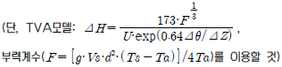
- 약 196m
- 약 165m
- 약 145m
- 약 124m
(정답률: 58%)
7. 다음 연기 형태 중 부채형(Fanning)에 관한 설명으로 가장 거리가 먼 것은?
- 주로 저기압구역에서 굴뚝 높이보다 더 낮게 지표 가까이에 역전층이, 그 상공에는 불안정상태일 때 발생한다.
- 굴뚝의 높이가 낮으면 지표부근에 심각한 오염문제를 발생시킨다.
- 대기가 매우 안정된 상태일 때 아침과 새벽에 잘 발생한다.
- 풍향이 자주 바뀔때면 뱀이 기어가는 연기모양이 된다.
(정답률: 59%)
8. 가우시안형의 대기오염 확산방정식을 적용할 때, 지면에 있는 오염원으로부터 바람부는 방향으로 250m 떨어진 연기중심축상 지상오염농도는? (단, 오염물질의 배출량은 5.5g/sec, 풍속은 5m/s, σy=22.5m, σz=12m 이다.)
- 1.3mg/m3
- 1.9mg/m3
- 2.3mg/m3
- 2.7mg/m3
(정답률: 53%)
9. 오염된 대기에서의 SO2의 산화에 관한 다음 설명 중 가장 거리가 먼 것은?
- 연소과정에서 배출되는 SO2의 광분해는 상당히 효과적인데, 그 이유는 저공에 도달하는 것보다 더 긴파장이 요구되기 때문이다.
- 낮은 농도의 올레핀계 탄화수소도 NO가 존재하면 SO2를 광산화시키는데 상당히 효과적일 수 있다.
- 파라핀계 탄화수소는 NOx와 SO2가 존재하여도 aerosol을 거의 형성시키지 않는다.
- 모든 SO2의 광화학은 일반적으로 전자적으로 여기된 상태의 SO2의 분자 운동들만 포함한다.
(정답률: 51%)
10. 다음 중 수용모델의 특성에 해당하는 것은?
- 지형 및 오염원의 조업조건에 영향을 받는다.
- 단기간 분석 시 문제가 된다.
- 현재나 과거에 일어났던 일을 추정, 미래를 위한 전략은 세울 수 있으나 미래예측은 어렵다.
- 점, 선, 면 오염원의 영향을 평가할 수 있다.
(정답률: 75%)
11. 굴뚝의 반경이 1.5m, 평균풍속이 180m/min인 경우 굴뚝의 유효연돌높이를 24m 증가시키기 위한 굴뚝 배출가스 속도는? (단, 연기의 유효상승 높이 △H=1.5×
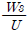
×D이용)- 13m/s
- 16m/s
- 26m/s
- 32m/s
(정답률: 61%)
12. 라돈에 관한 설명으로 옳지 않은 것은?(오류 신고가 접수된 문제입니다. 반드시 정답과 해설을 확인하시기 바랍니다.)
- 라돈 붕괴에 의해 생성된 낭핵종이 α선을 방출하여 폐암을 발생시키는 것으로 알려져 있다.
- 자극취가 있는 무색의 기체로서 γ선을 방출한다.
- 공기보다 무거워 지표에 가깝게 존재한다.
- 주로 건축자재를 통하여 인체에 영향을 미치고 있으며 화학적으로 거의 반응을 일으키지 않는다.
(정답률: 75%)
13. 지상 20m에서의 풍속이 10m/s 라고 한다면 지상 40m에서의 풍속(m/s)은? (단, Deacon의 power law 적용, P = 0.3)
- 약 10.9
- 약 11.3
- 약 12.3
- 약 13.3
(정답률: 66%)
14. 다음 대기오염물질 중 2차 오염물질과 거리가 먼 것은?
- SO3
- N2O3
- H2O2
- NO2
(정답률: 63%)
15. 빛의 소멸계수(σext) 0.45km-1인 대기에서, 시정거리의 한계를 빛의 강도가 초기 강도의 95%가 감소했을 때의 거리라고 정의할 때, 이 때 시정거리 한계는? (단, 광도는 Lambert-Beer 법칙을 따르며, 자연대수로 적용)
- 약 12.4 km
- 약 8.7 km
- 약 6.7 km
- 약 0.1 km
(정답률: 52%)
16. 대기오염물질이 인체에 미치는 영향으로 옳지 않은 것은?
- 오존(O3) - 눈을 자극하고, 폐수종과 폐충혈 등을 유발시키며, 섬모운동의 기능장애 등을 일으킬 수 있다.
- 납(Pb)과 그 화합물 - 다발성 신경염에 의해 사지의 가까운 부분에 강한 근육이 위축이 나타나며, 급성작용으로 주로 지각장애를 일으킨다.
- 크롬(Cr) - 만성중독은 코, 폐 및 위장의 점막에 병변을 일으키는 것이 특징이다.
- 비소(As) - 피부염, 주름살 부분의 궤양을 비롯하여, 색소침착, 손·발바닥의 각화, 피부암 등을 일으킨다.
(정답률: 64%)
17. 최대혼합 고도를 500m로 예상하여 오염농도를 3ppm으로 수정하였는데 실제 관측된 최대혼합고도는 200m 였다. 실제나타날 오염농도는?
- 36ppm
- 47ppm
- 55ppm
- 67ppm
(정답률: 65%)
18. 다음 중 CFC-12의 올바른 것은?
- CHFCl2
- CF3Br
- CF3Cl
- CF2Cl2
(정답률: 77%)
19. 유해화학물질의 생산, 저장, 수송, 누출 중의 사고로 인해 일어나는 대기오염 피해지역과 원인물질의 연결로 거리가 먼 것은?
- 체르노빌 – 방사능물질
- 포자리카 - 황화수소
- 세베소 – 다이옥신
- 보팔 - 이산화황
(정답률: 74%)
20. 먼지입자의 크기에 관한 설명으로 옳지 않은 것은?
- 공기역학적 직경이 대상 입자상 물질의 밀도를 고려하는데 반해, 스토크스 직경은 단위밀도(1g/cm3)를 갖는 구형입자로 가정하는 것이 두 개념의 차이이다.
- 스토크스 직경은 알고자 하는 입자상 물질과 같은 밀도 및 침강속도를 갖는 입자상 물질의 직경을 말한다.
- 공기역학적 직경은 먼지의 호흡기 침착, 공기정화기의 성능조사 등 입자의 특성파악에 주로 이용된다.
- 공기 중 먼지 입자의 밀도가 1g/cm3보다 크고, 구형에 가까운 입자의 공기역학적 직경은 실제 광학직경보다 항상 크게 된다.
(정답률: 69%)
2과목: 연소공학
21. 기체연료 연소방식 중 예혼합연소에 관한 설명으로 옳지 않은 것은?
- 연소기 내부에서 연료와 공기의 혼합비가 변하지 않고 균일하게 연소된다.
- 역화의 위험이 없으며 공기를 예열할 수 있다.
- 화염온도가 높아 연소부하가 큰 경우에 사용이 가능하다.
- 연소조절이 쉽고 화염길이가 짧다.
(정답률: 70%)
22. 0℃일 때의 물의 융해열과 100℃일 때 물의 기화열을 합한 열량(kcal/kg)은?
- 80
- 539
- 619
- 1025
(정답률: 57%)
23. 석탄 슬러리 연소에 대한 설명으로 옳은 것은?
- 석탄 슬러리 연료는 석탄분말에 물을 혼합한 COM과 기름을 혼합한 CWM으로 대별된다.
- COM연소의 경우 표면연소 시기에서는 연소온도가 높아진 만큼 표면연소의 속도가 감속된다고 볼 수 있다.
- 분해연소 시기에서는 CWM연소의 경우 30Wt%(W/W)의 물이 증발하여 증발열을 빼앗음과 동시에 휘발분과 산소를 희석하기 때문에 화염의 안정성이 극도로 나쁘게 된다.
- CWM연소의 경우 분해연소 시기에서는 50Wt%(W/W) 중유에 휘발분이 추가되는 형태가 되기 때문에 미분탄 연소보다는 확산연소에 가깝다.
(정답률: 53%)
24. 석탄의 공업분석에 관한 설명으로 옳지 않은 것은?
- 고정탄소는 조습시료의 질량에서부터 수분, 회분, 휘발분의 질량을 뺀 잔량의 비율로 표시된다.
- 공업분석은 건류나 연소 등의 방법으로 석탄을 공업적으로 이용할 때 석탄의 특성을 표시하는 분석방법이다.
- 회분은 시료 1g에 공기를 제한하면서 전기로에서 650℃까지 가열한 후 잔류하는 무기물량을 건조시료의 질량에 대한 백분율로 표시한다.
- 고정탄소와 휘발분의 질량비를 연료비라 한다.
(정답률: 64%)
25. 아래 조건의 기체연료의 이론연소온도(℃)는 약 얼마인가?
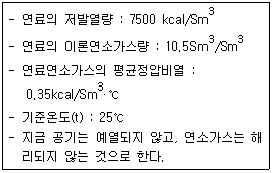
- 1916
- 2066
- 2196
- 2256
(정답률: 59%)
26. 다음 중 연소과정에서 등가비(equivalent ratio)가 1보다 큰 경우는?
- 공급연료가 과잉인 경우
- 배출가스 중 질소산화물이 증가하고 일산화탄소가 최소가 되는 경우
- 공급연료의 가연성분이 불완전한 경우
- 공급공기가 과잉인 경우
(정답률: 64%)
27. 엔탈피에 대한 설명으로 옳지 않은 것은?
- 엔탈피는 반응경로와 무관하다.
- 엔탈피는 물질의 양에 비례한다.
- 흡열반응은 반응계의 엔탈피가 감소한다.
- 반응물이 생성물보다 에너지상태가 높으면 발열반응이다.
(정답률: 60%)
28. 황분이 중량비로 S%인 중유를 매시간 W(L)사용하는 연소로에서 배출되는 황산화물의 배출량(m3/hr)은? (단, 표준상태기준, 중유비중 0.9, 황분은 전량 SO2로 배출)
- 21.4SW
- 1.24SW
- 0.0063SW
- 0.789SW
(정답률: 61%)
29. 다음 회분 중 백색에 가깝고 융점이 높은 것은?
- CaO
- SiO2
- MgO
- K2O
(정답률: 71%)
30. 유황 함유량이 1.5%인 중유를 시간당 100톤 연소시킬 때 SO2의 배출량(m3/hr)은? (단, 표준상태 기준, 유황은 전량이 반응하고, 이 중 5%는 SO3로서 배출되며, 나머지는 SO2로 배출된다.)
- 약 300
- 약 500
- 약 800
- 약 1,000
(정답률: 51%)
31. 화학반응속도론에 관한 다음 설명 중 가장 거리가 먼 것은?
- 영차반응은 반응속도가 반응물의 농도에 영향을 받지 않는 반응을 말한다.
- 화학반응속도는 반응물이 화학반응을 통하여 생성물을 형성할 때 단위시간당 반응물이나 생성물의 농도변화를 의미한다.
- 화학반응식에서 반응속도상수는 반응물 농도와 관련된다.
- 일련의 연쇄반응에서 반응속도가 가장 늦은 반응단계를 속도결정단계라 한다.
(정답률: 55%)
32. 다음 액화석유가스(LPG)에 대한 설명으로 거리가 먼 것은?
- 비중이 공기보다 무거워 누출 시 인화·폭발의 위험성이 높은 편이다.
- 액체에서 기체로 기화될 때 증발열이 5~10kcal/kg로 작아 취급이 용이하다.
- 발열량이 높은 편이며, 황분이 적다.
- 천연가스에서 회수되거나 나프타의 분해에 의해 얻어지기도 하지만 대부분 석유정제 시 부산물로 얻어진다.
(정답률: 67%)
33. 다음 ( )안에 알맞은 것은?
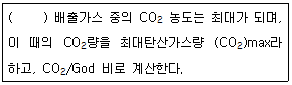
- 실제공기량으로 연소시킬 때
- 공기부족상태에서 연소시킬 때
- 연료를 다른 미연성분과 같이 불완전 연소시킬 때
- 이론공기량으로 완전연소 시킬 때
(정답률: 73%)
34. 수소 12%, 수분 0.7%인 중유의 고위발열량이 5000kcal/kg일 때 저위 발열량(kcal/kg)은?
- 4348
- 4412
- 4476
- 4514
(정답률: 55%)
35. 연소공정에서 과잉공기량의 공급이 많을 경우 발생하는 현상으로 거리가 먼 것은?
- 연소실의 온도가 낮게 유지된다.
- 배출가스의 의한 열손실이 증대된다.
- 황산화물에 의한 전열면의 부식을 가중시킨다.
- 매연발생이 많아진다.
(정답률: 69%)
36. 다음 중 기체의 연소속도를 지배하는 주요인자와 가장 거리가 먼 것은?
- 발열량
- 촉매
- 산소와의 혼합비
- 산소농도
(정답률: 55%)
37. C = 82%, H = 14%, S = 3%, N = 1%로 조성된 중유를 12(Sm3공기/kg중유)로 완전연소 했을 때 습윤 배출가스 중 SO2는 약 몇 ppm 인가? (단, 중유 중 황분은 모두 SO2 로 된다.)
- 1400
- 1640
- 1900
- 2260
(정답률: 50%)
38. 발화온도(착화온도)에 관한 설명으로 가장 거리가 먼 것은?
- 가연물을 외부로부터 직접 점화하여 가열하였을 때 불꽃에 의해 연소되는 최저온도를 말한다.
- 가연물의 분자구조가 복잡할수록 발화온도는 낮아진다.
- 발열량이 크고 반응성이 큰 물질일수록 발화온도가 낮아진다.
- 화학결합의 활성도가 큰 물질일수록 발화온도가 낮아진다.
(정답률: 54%)
39. 가로, 세로, 높이가 각각 3m, 1m, 1.5m인 연소실에서 연소실 열발생율을 2.5×105 kcal/m3·hr가 되도록 하려면 1시간에 중유를 몇 kg 연소시켜야 하는가? (단, 중유의 저위발열량은 11000 kcal/kg이다.)
- 약 50
- 약 100
- 약 150
- 약 200
(정답률: 54%)
40. 탄소 86%, 수소 13%, 황 1%의 중유를 연소하여 배기가스를 분석했더니 (CO2+SO2)가 13%, O2가 3%, CO가 0.5%이었다. 건조연소가스 중의 SO2 농도는? (단, 표준상태 기준)
- 약 590ppm
- 약 970ppm
- 약 1120ppm
- 약 1480ppm
(정답률: 41%)
3과목: 대기오염 방지기술
41. 먼지농도 10g/m3인 배기가스를 1200m3/min로 배출하는 배출구에 여과집진장치를 설치하고자 한다. 이 여과집진장치의 평균 여과속도는 3m/min이고, 여기에 직경 20cm, 길이 4m의 여과백을 사용한다면 필요한 여과백의 수는?
- 120개
- 140개
- 160개
- 180개
(정답률: 54%)
42. 다음 유해가스 처리에 관한 설명 중 가장 거리가 먼 것은?
- 염화인(PCl3)은 물에대한 용해도가 낮아 암모니아를 불어넣어 벙류식 충전탑에서 흡수처리한다.
- 시안화수소는 물에 대한 용해도가 매우 크므로 가스를 물로 세정하여 처리한다.
- 아크로레인은 그대로 흡수가 불가능하며 NaClO 등의 산화제를 혼입한 가성소다 용액으로 흡수 제거한다.
- 이산화셀렌은 코트럴집진기로 포집, 결정으로 석출, 물에 잘 용해되는 성질을 이용해 스크러버에 의해 세정하는 방법 등이 이용된다.
(정답률: 54%)
43. 황함유량 2.5%인 중유를 30ton/hr로 연소하는 보일러에서 배기가스를 NaOH 수용액으로 처리한 후 황성분을 전량 Na2SO3로 회수할 경우, 이때 필요한 NaOH의 이론량은? (단, 황성분은 전량 SO2로 전환된다.)
- 1750 kg/hr
- 1875 kg/hr
- 1935 kg/hr
- 2015 kg/hr
(정답률: 54%)
44. 습식 전기집진장치의 특징에 관한 설명으로 가장 거리가 먼 것은?
- 낮은 전기저항 때문에 발생하는 재비산을 방지할 수 있다.
- 처리가스 속도를 건식보다 2배 정도 높일 수 있다.
- 집진극면이 청결하게 유지되며 강전계를 얻을 수 있다.
- 먼지의 저항이 높기 때문에 역전리가 잘 발생된다.
(정답률: 68%)
45. 배출가스 내의 NOx 제거방법 중 환원제를 사용하는 접촉환원법에 관한 설명으로 가장 거리가 먼 것은?
- 선택적 환원제로는 NH3, H2S 등이 있다.
- 선택적인 접촉환원법에서 Al2O3계의 촉매는 SO2, SO3, O2와 반응하여 황산염이 되기 쉽고, 촉매의 활성이 저하된다.
- 선택적인 접촉환원법은 과잉의 산소를 먼저 소모한 후 첨가된 반응물인 질소산화물을 선택적으로 환원시킨다.
- 비선택적 접촉환원법의 촉매로는 Pt뿐만 아니라 CO, Ni, Cu, Cr 등의 산화물도 이용 가능하다.
(정답률: 45%)
46. Stokes 운동이라 가정하고, 직경 20㎛, 비중 1.3인 입자의 표준대기중 종말침강속도는 몇 m/s인가? (단, 표준공기의 점도와 밀도는 각각 3.44×10-5kg/m·s, 1.3kg/m3이다.)
- 1.64×10-2
- 1.32×10-2
- 1.18×10-2
- 0.82×10-2
(정답률: 41%)
47. 다음 중 가스분산형 흡수장치에 해당하는 것은?
- 기포탑
- 사이클론스크러버
- 분무탑
- 충전탑
(정답률: 58%)
48. 가스처리방법 중 흡착(물리적 기준)에 관한 내용으로 가장 거리가 먼 것은?
- 흡착열이 낮고 흡착과정이 가역적이다.
- 다분자 흡착이며 오염가스 회수가 용이하다.
- 처리할 가스의 분압이 낮아지면 흡착량은 감소한다.
- 처리가스의 온도가 올라가면 흡착량이 증가한다.
(정답률: 59%)
49. 다음 발생 먼지 종류 중 일반적으로 S/Sb가 가장 큰 것은? (단, S는 진 비중, Sb는 겉보기 비중)
- 미분탄보일러
- 시멘트킬른
- 카본블랙
- 골재드라이어
(정답률: 72%)
50. 환기시설 설계에 사용되는 보충용 공기에 관한 설명으로 옳지 않은 것은?(오류 신고가 접수된 문제입니다. 반드시 정답과 해설을 확인하시기 바랍니다.)
- 보충용 공기가 배기용 공기보다 약 10~15%정도 많도록 조절하여 실내를 약간 양압으로 하는 것이 좋다.
- 여름에는 보통 외부공기를 그대로 공급을 하지만, 공정 내의 열부하가 커서 제어해야 하는 경우에는 보충용 공기를 냉각하여 공급한다.
- 보충용 공기는 환기시설에 의해 작업장 내에서 배기된 만큼의 공기를 작업장 내로 재공급해야 하는 공기의 양을 말한다.
- 보충용 공기의 유입구는 작업장이나 다른 건물의 배기구에서 나온 유해물질의 유입을 유도할 수 있는 위치로서 바닥에서 1~1.2m정도에서 유입하도록 한다.
(정답률: 60%)
51. 미세입자가 운동하는 경우에 작용하는 항력(drag force)에 관련된 내용으로 거리가 먼 것은?
- 레이놀즈수가 커질수록 항력계수는 증가한다.
- 항력계수가 커질수록 항력은 증가한다.
- 입자의 투영면적이 클수록 항력은 증가한다.
- 상대속도의 제곱에 비례하여 항력은 증가한다.
(정답률: 53%)
52. 원심력집진장치에 관한 설명으로 옳지 않은 것은?
- 배기관경(내경)이 작을수록 입경이 작은 먼지를 제거할 수 있다.
- 점착성이 있는 먼지의 집진에는 적당치 않으며, 딱딱한 입자는 장치의 마모를 일으킨다.
- 침강먼지 및 미세한 먼지의 재비산을 막기 위해 스키머와 회전깃, 살수설비 등을 설치하여 제거효율을 증대시킨다.
- 고농도일 때는 직렬 연결하여 사용하고, 응집성이 강한 먼지인 경우는 병렬 연결하여 사용한다.
(정답률: 64%)
53. 전기집진장치 내 먼지의 겉보기 이동속도는 0.11m/s, 5m×4m인 집진판 182매를 설치하여 유량 9000m3/min를 처리할 경우 집진효율은? (단, 내부 집진판은 양면집진, 2개의 외부 집진판은 각 하나의 집진면을 가진다.)
- 98.0%
- 98.8%
- 99.0%
- 99.5%
(정답률: 43%)
54. 원형 Duct의 기류에 의한 압력손실에 관한 설명으로 옳지 않은 것은?
- 길이가 길수록 압력손실은 커진다.
- 유속이 클수록 압력손실은 커진다.
- 직경이 클수록 압력손실은 작아진다.
- 곡관이 많을수록 압력손실은 작아진다.
(정답률: 69%)
55. 커닝험 보정계수에 대한 설명으로 가장 적합한 것은? (단, 커닝험 보정계수가 1 이상인 경우)
- 미세입자일수록 가스의 점성저항이 작아지므로 커닝험 보정계수가 작아진다.
- 미세입자일수록 가스의 점성저항이 커지므로 커닝험 보정계수가 작아진다.
- 미세입자일수록 가스의 점성저항이 커지므로 커닝험 보정계수가 커진다.
- 미세입자일수록 가스의 점성저항이 작아지므로 커닝험 보정계수가 커진다.
(정답률: 45%)
56. 후드의 제어속도(Control Velocity)에 관한 설명으로 옳은 것은?
- 확산조건, 오염원의 주변 기류에는 영향이 크지 않다.
- 유해물질의 발생조건이 조용한 대기 중 거의 속도가 없는 상태로 비산하는 경우(가스, 흄 등)의 제어속도 범위는 1.5~2.5m/s 정도이다.
- 유해물질의 발생조건이 빠른 공기의 움직임이 있는 곳에서 활발히 비산하는 경우(분쇄기 등)의 제어속도 범위는 15~25m/s 정도이다.
- 오염물질의 발생속도를 이겨내고 오염물질을 후드내로 흡인하는데 필요한 최소의 기류속도를 말한다.
(정답률: 49%)
57. 벤츄리스크러버의 액가스비를 크게 하는 요인으로 옳지 않은 것은?
- 먼지입자의 친수성이 클 때
- 먼지의 입경이 작을 때
- 먼지입자의 점착성이 클 때
- 처리가스의 온도가 높을 때
(정답률: 72%)
58. 악취 및 휘발성 유기화합물질 제거에 일반적으로 가장 많이 사용하는 흡착제는?
- 제올라이트
- 활성백토
- 실리카겔
- 활성탄
(정답률: 69%)
59. 압력손실은 100~200mmH2O 정도이고, 가스량 변동에도 비교적 적응성이 있으며, 흡수액에 고형분이 함유되어 있는 경우에는 흡수에 의해 침전물이 생기는 등 방해를 받는 세정장치로 가장 적합한 것은?
- 다공판탑
- 제트스크러버
- 충전탑
- 벤츄리스크러버
(정답률: 48%)
60. 유수식 세정집진장치의 종류와 가장 거리가 먼 것은?
- 가스분수형
- 스크루형
- 임펠라형
- 로타형
(정답률: 48%)
4과목: 대기오염 공정시험기준(방법)
61. 굴뚝 배출가스 중 아황산가스의 자동연속측정방법에서 사용되는 용어의 의미로 옳지 않은 것은?
- 검출한계 : 제로드리프트의 2배에 해당하는 지시치가 갖는 아황산가스의 농도를 말한다.
- 응답시간 : 시료채취부를 통하지 않고 제로가스를 연속자동측정기의 분석부에 흘려주다가 갑자기 스팬가스로 바꿔서 흘려준 후, 기록계에 표시된 지시치가 스팬가스 보정치의 95%에 해당하는 지시치를 나타낼 때까지 걸리는 시간을 말한다.
- 경로(Path)측정 시스템 : 굴뚝 또는 덕트 단면 직경의 5% 이상의 경로를 따라 오염물질 농도를 측정하는 배출가스 연속자동측정시스템을 말한다.
- 제로가스 : 공인기관에 의해 아황산가스 농도가 1ppm 미만으로 보증된 표준가스를 말한다.
(정답률: 44%)
62. 기체크로마토그래피에서 분리관 효율을 나타내기 위한 이론단수를 구하는 식으로 옳은 것은? (단, tR : 시료도입점으로부터 봉우리 최고점까지의 길이, W : 봉우리의 좌우 변곡점에서 접선이 자르는 바탕선의 길이)
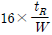
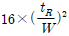
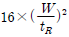
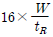
(정답률: 68%)
63. 원자흡수분광광도법의 원리를 가장 올바르게 설명한 것은?
- 시료를 해리시켜 중성원자로 증기화하여 생긴 기저상태의 원자가 이 원자 증기층을 투과하는 특유파장의 빛을 흡수하는 현상을 이용
- 시료를 해리시켜 발생된 여기상태의 원자가 기저상태로 되면서 내는 열의 피크폭을 측정
- 시료를 해리시켜 발생된 여기상태의 원자가 원자 증기층을 통과하는 빛의 발생속도의 차이를 이용
- 시료를 해리시켜 발생된 여기상태의 원자가 기저상태로 돌아올 때 내는 가스속도의 차이를 이용한 측정
(정답률: 59%)
64. 환경대기 중의 먼지농도 시료채취 방법인 고용량 공기시료채취기법에 관한 설명으로 옳지 않은 것은?
- 채취입자의 입경은 일반적으로 0.01~100㎛ 범위이다.
- 공기흡입부의 경우 무부하일 때의 흡입유량이 보통 0.5m3/hr범위 정도로 한다.
- 공기흡입부, 여과지홀더, 유량측정부 및 보호상자로 구성된다.
- 채취용 여과지는 보통 0.3㎛되는 입자를 99%이상 채취할 수 있는 것을 사용한다.
(정답률: 48%)
65. 시료채취 시 흡수액으로 수산화소듐용액을 사용하지 않는 것은?
- 불소화합물
- 이황화탄소
- 시안화수소
- 브롬화합물
(정답률: 59%)
66. 배출가스 중 황산화물을 분석하기 위하여 중화적정법에 의해 설팜산(sulfamine acid)표준시약 2.0g을 물에 녹여 250mL로 하고, 이 용액 25mL를 분취하여 N/10-NaOH 용액으로 중화 적정한 결과 21.6mL가 소요되었다. 이 때 N/10-NaOH 용액의 factor값은? (단, 설팜산의 분자량은 97.1 이다.)(관련 규정 개정전 문제로 여기서는 기존 정답인 2번을 누르면 정답 처리됩니다. 자세한 내용은 해설을 참고하세요.)
- 0.90
- 0.95
- 1.00
- 1.⑤
(정답률: 46%)
67. 분석대상가스 중 아세틸아세톤함유 흡수액을 흡수액으로 사용하는 것은?
- 시안화수소
- 벤젠
- 비소
- 폼알데하이드
(정답률: 65%)
68. 반자동식 채취기에 의한 방법으로 배출가스 중 먼지를 측정하고자 할 경우 흡인노즐에 관한 설명이다. ( )안에 가장 적합한 것은?
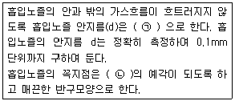
- ㉠ 1mm 이상, ㉡ 30°이하
- ㉠ 1mm 이상, ㉡ 45°이하
- ㉠ 3mm 이상, ㉡ 30°이하
- ㉠ 3mm 이상, ㉡ 45°이하
(정답률: 55%)
69. 알데하이드류를 DNPH 유도체를 형성하여 아세토나이트릴(acetonitrile) 용매로 추출하여 고성능 액체크로마토그래피에 의해 자외선 검출기로 분석할 때 측정파장으로 가장 적합한 것은?
- 360nm
- 510nm
- 650nm
- 730nm
(정답률: 39%)
70. 배출가스 중의 납화합물을 자외선 가시선 분광법으로 분석한 결과가 아래와 같다고 할 때, 표준상태 건조 배출가스 중 납의 농도는?(관련 규정 개정전 문제로 여기서는 기존 정답인 3번을 누르면 정답 처리됩니다. 자세한 내용은 해설을 참고하세요.)
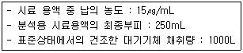
- 0.0375mg/Sm3
- 0.375mg/Sm3
- 3.75mg/Sm3
- 37.5mg/Sm3
(정답률: 43%)
71. 굴뚝연속자동측정기 측정방법 중 도관의 부착방법으로 옳지 않은 것은?
- 도관은 가능한 짧은 것이 좋다.
- 냉각도관은 될 수 있는 대로 수직으로 연결한다.
- 기체-액체 분리관은 도관의 부착위치 중 가장 높은 부분 또는 최고 온도의 부분에 부착한다.
- 응축수의 배출에 쓰는 펌프는 충분히 내구성이 있는 것을 쓰고, 이 때 응축 수트랩은 사용하지 않아도 좋다.
(정답률: 53%)
72. A레이온 공장 굴뚝배출가스 중 황화수소를 아이오딘 적정법으로 측정한 결과 다음과 같았다. 시료가스 중 황화수소의 농도는? (단, 표준상태 기준)(관련 규정 개정전 문제로 여기서는 기존 정답인 4번을 누르면 정답 처리됩니다. 자세한 내용은 해설을 참고하세요.)
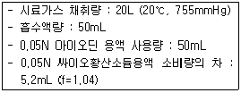
- 약 1⑤ ppm
- 약 119 ppm
- 약 135 ppm
- 약 164 ppm
(정답률: 22%)
73. 환경대기 내의 석면 시험방법(위상차현미경법) 중 시료채취 장치 및 기구에 관한 설명으로 옳지 않은 것은?
- 멤브레인 필터의 광굴절률 : 약 3.5 전후
- 멤브레인 필터의 재질 및 규격 : 셀룰로오스 에스테르제 또는 셀룰로오스 나이트레이트계 pore size 0.8~1.2㎛, 직경 25mm, 또는 47mm
- 20L/min로 공기를 흡인할 수 있는 로터리펌프 또는 다이아프램 펌프는 시료채취관, 시료채취장치, 흡인기체 유량측정장치, 기체흡입장치 등으로 구성 한다.
- Open face형 필터홀더의 재질 : 40mm의 집풍기가 홀더에 장착된 PVC
(정답률: 58%)
74. 굴뚝 단면이 원형일 경우 먼지측정을 위한 측정점에 관한 설명으로 옳지 않은 것은?
- 굴뚝 직경이 4.5m를 초과할 때는 측정점수는 20 이다.
- 굴뚝 반경이 2.5m인 경우에 측정점수는 20 이다.
- 굴뚝 단면적이 1m2 이하로 소규모일 경우에는 그 굴뚝 단면의 중심을 대표점으로 하여 1점만 측정한다.
- 굴뚝 직경이 1.5m인 경우에 반경 구분수는 2 이다.
(정답률: 58%)
75. 공정시험기준 중 일반화학분석에 대한 공통적인 사항으로 따로 규정이 없는 경우 사용해야 하는 시약의 규격으로 옳지 않은 것은?(명칭 : 농 도(%) : 비중(약))
- 암모니아수 : 32.0~38.0 (NH3로서) : 1.38
- 플루오르화수소산 : 46.0~48.0 : 1.14
- 브롬화수소산 : 47.0~49.0 : 1.48
- 과염소산 : 60.0~62.0 : 1.54
(정답률: 56%)
76. 기체크로마토그래피의 정성분석에 관한 설명으로 거리가 먼 것은?
- 동일 조건하에서 특정한 미지성분의 머무른 값(보유치)와 예측되는 물질의 봉우리의 머무른 값을 비교한다.
- 보유치의 표시는 무효부피(Dead Volume)의 보정유무를 기록하여야 한다.
- 보통 5~30분 정도에서 측정하는 봉우리의 보유시간은 반복시험을 할 때 ±5% 오차범위 이내이어야 한다.
- 보유시간을 측정할 때는 3회 측정하여 그 평균치를 구한다.
(정답률: 65%)
77. 굴뚝 배출가스 유속을 피토관으로 측정한 결과가 다음과 같을 때 배출가스 유속은?
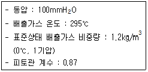
- 43.7m/s
- 48.2m/s
- 50.7m/s
- 54.3m/s
(정답률: 52%)
78. 배출가스 중 수동식측정방법으로 먼지측정을 위한 장치구성에 관한 설명으로 옳지 않은 것은?
- 원칙적으로 적산유량계는 흡입 가스량의 측정을 위하여 또 순간유량계는 등속흡입조작을 확인하기 위하여 사용한다.
- 먼지포집부의 구성은 흡입노즐, 여과지홀더, 고정쇠, 드레인포집기, 연결관 등으로 구성되며, 단, 2형일 때는 흡입노즐 뒤에 흡입관을 접속한다.
- 여과지홀더는 유리제 또는 스테인리스강 재질 등으로 만들어진 것을 쓴다.
- 건조용기는 시료채취 여과지의 수분평형을 유지하기 위한 용기로서(20±5.6)℃ 대기압력에서 적어도 4시간을 건조시킬 수 있어야 한다. 또는, 여과지를 100℃에서 적어도 2시간동안 건조시킬 수 있어야 한다.
(정답률: 54%)
79. 환경대기 중 가스상 물질을 용매채취법으로 채취할 때 사용하는 순간유량계 중 면적식 유량계는?
- 게이트식 유량계
- 미스트식 가스미터
- 오리피스 유량계
- 노즐식 유량계
(정답률: 61%)
80. 액의 농도에 관한 설명으로 옳지 않은 것은?
- 액의 농도를 (1→5)로 표시한 것은 그 용질의 성분이 고체일 때는 1g을 용매에 녹여 전량을 5mL로 하는 비율을 말한다.
- 황산(1:7)은 용질이 액체일 때 1mL를 용매에 녹여 전량을 7mL로 하는 것을 뜻한다.
- 혼액(1+2)은 액체상의 성분을 각각 1용량 대 2용량의 비율로 혼합한 것을 뜻한다.
- 단순히 용액이라 기재하고 그 용액의 이름을 밝히지 않은 것은 수용액을 뜻한다.
(정답률: 68%)
5과목: 대기환경관계법규
81. 대기환경보전법령상 배출시설 설치신고를 하고자 하는 경우 설치신고서에 포함되어야 하는 사항과 가장 거리가 먼 것은?
- 배출시설 및 방지시설의 설치명세서
- 방지시설의 일반도
- 방지시설의 연간 유지관리 계획서
- 유해오염물질 확정 배출농도 내역서
(정답률: 45%)
82. 대기환경보전법규상 배출시설 가동 시에 방지시설을 가동하지 아니하거나 오염도를 낮추기 위하여 배출시설에서 배출되는 대기오염물질에 공기를 섞어 배출하는 행위에 대한 1차 행정처분 기준은?
- 조업정지 30일
- 조업정지 20일
- 조업정지 10일
- 경고
(정답률: 44%)
83. 대기환경보전법령상 청정연료를 사용하여야 하는 대상시설의 범위에 해당하지 않는 시설은?
- 산업용 열병합 발전시설
- 전체보일러의 시간당 총 증발량이 0.2톤 이상인 업무용보일러
- 집단에너지사업법 시행령에 따른 지역냉난방사업을 위한 시설
- 건축법 시행령에 따른 중앙집중난방방식으로 열을 공급받고 단지 내의 모든 세대의 평균 전용면적이 40.0m2를 초과하는 공동주택
(정답률: 56%)
84. 환경정책기본법상 환경부장관은 국가환경종합계획의 종합적·체계적 추진을 위해 얼마마다 환경보전중기종합계획을 수립하여야 하는가?
- 1년
- 3년
- 5년
- 10년
(정답률: 46%)
85. 대기환경보전법령상 사업장별 환경기술인의 자격기준에 관한 설명으로 옳지 않은 것은?
- 4종사업장과 5종사업장 중 특정대기유해물질이 환경부령으로 정하는 기준 이상으로 포함된 오염물질을 배출하는 경우에는 3종사업장에 해당하는 기술인을 두어야 한다.
- 1종사업장과 2종사업장 중 1개월 동안 실제 작업한 날만을 계산하여 1일 평균 17시간 이상 작업하는 경우에는 해당 사업장의 기술인을 각각 1명 이상 두어야 한다.
- 공동방지시설에서 각 사업장의 대기오염물질 발생량의 합계가 4종사업장과 5종사업장의 규모에 해당하는 경우에는 3종사업장에 해당하는 기술인을 두어야 한다.
- 배출시설 중 일반보일러만 설치한 사업장과 대기 오염물질 중 먼지만 발생하는 사업장은 5종사업장에 해당하는 기술인을 둘 수 있다.
(정답률: 58%)
86. 대기환경보전법규상 분체상 물질을 싣고 내리는 공정의 경우, 비산먼지 발생을 억제하기 위해 작업을 중지해야 하는 평균풍속(m/s)의 기준은?
- 2 이상
- 5 이상
- 7 이상
- 8 이상
(정답률: 57%)
87. 대기환경보전법규상 개선명령 등의 이행보고와 관련하여 환경부령으로 정하는 대기오염도 검사기관에 해당하지 않는 것은?
- 보건환경연구원
- 유역환경청
- 한국환경공단
- 환경보전협회
(정답률: 67%)
88. 실내공기질 관리법규상“어린이집”의 실내공기질 유지기준으로 옳은 것은?
- PM10(㎍/m3) - 150 이하
- CO(ppm) - 25 이하
- 총부유세균(CFU/m3) - 800 이하
- 폼알데하이드(㎍/m3) - 150 이하
(정답률: 49%)
89. 대기환경보전법상 기후·생태계 변화 유발물질이라 볼 수 없는 것은?
- 이산화탄소
- 아산화질소
- 탄화수소
- 메탄
(정답률: 37%)
90. 대기환경보전법령상 대기오염경보에 관한 설명으로 옳지 않은 것은?
- 미세먼지(PM-10), 미세먼지(PM-2.5), 오존(O3) 3개 항목 모두 오염물질 농도에 따라 주의보, 경보, 중대경보로 구분하고, 경보발령의 경우 자동차 사용 자제요청의 조치사항을 포함한다.
- 대기오염 경보대상 오염물질은 미세먼지(PM-10), 미세먼지(PM-2.5), 오존(O3)으로 한다.
- 해당 지역의 대기자동측정소 PM-10 또는 PM-2.5의 권역별 평균 농도가 경보 단계별 발령기준을 초과하면 해당 경보를 발령할 수 있다.
- 오존 농도는 1시간 평균농도를 기준으로 하며, 해당 지역의 대기자동측정소 오존 농도가 1개소라도 경보단계별 발령기준을 초과하면 해당 경보를 발령할 수 있다.
(정답률: 54%)
91. 악취방지법규상 다음 지정악취물질의 배출허용기준(ppm)으로 옳지 않은 것은? (단, 공업지역)
- n-발레르알데하이드 – 0.02 이하
- 톨루엔 : 30 이하
- 프로피온산 : 0.1 이하
- I-발레르산 : 0.004 이하
(정답률: 41%)
92. 대기환경보전법규상 시·도지사가 설치하는 대기오염 측정망에 해당하는 것은?
- 대기 중의 중금속 농도를 측정하기 위한 대기중금속 측정망
- 대기오염물질의 지역배경농도를 측정하기 위한 교외대기측정망
- 도시지역의 휘발성유기화합물 등의 농도를 측정하기 위한 광화학대기오염물질측정망
- 산성 대기오염물질의 건성 및 습성 침착량을 측정하기 위한 산성강하물측정망
(정답률: 61%)
93. 환경정책기본법령상 대기 중 미세먼지(PM-10)의 환경기준으로 적절한 것은? (단, 연간평균치)
- 150㎍/m3 이하
- 120㎍/m3 이하
- 70㎍/m3 이하
- 50㎍/m3 이하
(정답률: 56%)
94. 대기환경보전법규상 자동차 연료·첨가제 또는 촉매제 검사기관의 지정기준 중 자동차 연료 검사기관의 기술능력 및 검사장비기준으로 옳지 않은 것은?
- 검사원은 국가기술자격법 시행규칙에 따른 자동차, 화공, 안전관리(가스), 환경 분야의 기사 자격 이상을 취득한 사람이어야 한다.
- 검사원은 2명 이상이어야 하며, 그 중 한 명은 해당 검사업무에 5년 이상 종사한 경험이 있는 사람이어야 한다.
- 휘발유·경유·바이오디젤(BD100) 검사를 위해 1ppm 이하 분석가능한 황함량분석기 1식을 갖추어야 한다.
- 휘발유·경유·바이오디젤 검사기관과 LPG·CNG·바이오가스 검사기관의 기술능력 기준은 같으며, 두 검사 업무를 함께 하려는 경우에는 기술능력을 중복하여 갖추지 아니할 수 있다.
(정답률: 53%)
95. 대기환경보전법규상 대기환경규제지역을 관할하는 시·도지사 또는 대도시 시장이 그 지역의 환경기준을 달성·유지하기 위해 수립하는 실천계획에 포함되어야 할 사항과 가장 거리가 먼 것은? (단, 그 밖의 환경부장관이 정하는 사항 등은 제외한다.)
- 대기오염예측모형을 이용한 특정대기오염물질 배출량조사
- 대기오염원별 대기오염물질 저감계획 및 계획의 시행을 위한 수단
- 일반 환경 현황
- 대기보전을 위한 투자계획과 대기오염물질 저감효과를 고려한 경제성 평가
(정답률: 39%)
96. 대기환경보전법령상 기본부과금의 농도별 부과계수 중 연료의 황함유량이 1.0% 이하인 경우 농도별 부과계수로 옳은 것은? (단, 연료를 연소하여 황산화물을 배출하는 시설(황산화물의 배출량을 줄이기 위하여 방지시설을 설치한 경우와 생산공정상 황산화물의 배출량이 줄어든다고 인정하는 경우는 제외))
- 0.2
- 0.4
- 0.8
- 1.0
(정답률: 56%)
97. 대기환경보전법상 다음 용어의 뜻으로 거리가 먼 것은?
- 대기오염물질 : 대기 중에 존재하는 물질 중 심사·평가 결과 대기오염의 원인으로 인정된 가스·입자상물질로서 환경부령으로 정하는 것을 말한다.
- 기후·생태계 변화유발물질 : 지구 온난화 등으로 생태계의 변화를 가져올 수 있는 기체상물질로서 온실가스와 환경부령으로 정하는 것을 말한다.
- 매연 : 연소할 때에 생기는 유리탄소가 주가 되는 미세한 입자상물질을 말한다.
- 촉매제 : 자동차에서 배출되는 대기오염물질을 줄이기 위하여 자동차에 부착 또는 교체하는 장치로서 환경부령으로 정하는 저감효율에 적합한 장치를 말한다.
(정답률: 59%)
98. 대기환경보전법규상 대기오염경보단계 중 오존의 중대경보의 발령기준으로 옳은 것은? (단, 오존농도는 1시간 평균농도를 기준으로 한다.)
- 기상조건 등을 고려하여 해당 지역의 대기자동측정소 오존농도가 0.12ppm 이상인 때
- 기상조건 등을 고려하여 해당 지역의 대기자동측정소 오존농도가 0.15ppm 이상인 때
- 기상조건 등을 고려하여 해당 지역의 대기자동측정소 오존농도가 0.3ppm 이상인 때
- 기상조건 등을 고려하여 해당 지역의 대기자동측정소 오존농도가 0.5ppm 이상인 때
(정답률: 47%)
99. 수도권 대기환경개선에 관한 특별법 상 수도권 대기환경관리위원회의 위원장은?
- 대통령
- 국무총리
- 환경부장관
- 한강유역환경청장
(정답률: 63%)
100. 대기환경보전법령상 배출허용기준초과와 관련하여 개선명령을 받은 사업자의 개선계획서 제출기한은? (단, 기간 연장은 제외)
- 명령을 받은 날부터 10일 이내
- 명령을 받은 날부터 15일 이내
- 명령을 받은 날부터 30일 이내
- 명령을 받은 날부터 60일 이내
(정답률: 38%)